Вечер 1
Лишний номер
Пройти первые сутки на «Нитке»: научиться жить по сетке перекличек и решить, что делать с лишним номером Т-20-00 и человеком под ним.
Открыть сценарий →
Экипаж спасательного буксира «Стриж» нарушил приказ и снял тридцать одного человека с закрытого Двадцатого причала. Теперь вы на «Нитке», пересадочной тюрьме над облачной Кордеей: восемь дней до заключительного перевода, после которого экипаж разделят навсегда. Каждый день — три переклички, и на каждой номера на робах читают вслух. На первой в вашем строю оказался лишний человек с номером вашей серии. И никто не может сказать, кто его туда поставил.
Перед чтением вступления сверьте место героев, присутствующих людей и предметы с итогом прошлого вечера. Если условия встречи отпали, сыграйте последствия там, где находится партия. Событие по расписанию может произойти за кадром. Герои узнают о нём от тех, кто был на месте.
Покажите пустую камеру при перекличке. Служба переводов требует объяснений от дежурного. Спросите, кто готов открыть укрытие Эша, а кто оставит в рапорте первую неверную строку. Конвой не получает пленного автоматически.
«Иней» отходит по расписанию. Сверьте имена оставшихся с рапортом и сыграйте перекличку на станции. При разделении дайте короткий кадр и тем, кто достиг борта, и тем, кто сам решил остаться.
Откажемся вести дело Службы переводов. Будем принимать личные сообщения с Двадцатого. Передаём личный вызов только согласившимся слушать. Записанный голос слышат родные, согласившиеся слушать. Команда не берёт обязательства отстыковать паром.
Попросим ответить на новый вопрос по связи и сверим ответ со страницей журнала. Доступные свидетельства — Голос с Двадцатого, Страница журнала Двадцатого. Эш сам передал вызов. Запечатали паром с людьми внутри по устному приказу, численность записали сразу. Берём у дежурного отдельное подтверждение числа людей. Дежурный подтверждает, что на причале есть живые. Родные решают, передавать ли запись; ведомственный протокол не подменяет перекличку.
После обыска блок Б перекрыт; отряд не уносит бумаги. Ищем свободный канал для свидетельства об обыске. Работаем через сохранившуюся связь. В последнем сеансе называем только ответивших; судьба остальных неизвестна.
8 сессий по Около трёх часов: три сцены по 50 минут и перерыв 15 минут; обсуждение границ перед первым вечером. Подготовленные герои — уровень 3. Прочитайте первую сессию, выберите состав и передайте игрокам отдельную страницу героев.
В мастерской создайте или откройте свой черновик, выберите импорт пакета и укажите package.json либо нужный файл из variants. Проверьте сценарий и состав в предпросмотре; активацию подтверждает ведущий. Сюжетные развилки, часы давления и жанровые действия разрешаются ведущим — они не становятся автоматически сыгранными событиями.
Пакеты разных размеров используют первые N героев в порядке карточек. Дополнительные герои дают новые роли, но не обязательные ключи к истории. Выбор произвольного состава требует правки черновика и повторной проверки.
Тюремный побег, который считают по номерам: холод стекла, заклёпки, сетка перекличек на стене и голос, читающий ваши номера вслух трижды в день. Напряжённо и по-взрослому, без жестокости; с заслуженной надеждой.
Пройти первые сутки на «Нитке»: научиться жить по сетке перекличек и решить, что делать с лишним номером Т-20-00 и человеком под ним.
Открыть сценарий →Устроить номер Т-20-00, чтобы он перестал приносить отметку каждое утро, и сохранить книжку лиц на вечернем досмотре.
Открыть сценарий →Увидеть Двадцатый причал своими глазами, найти среди спасённых тех, кто на «Нитке», и тех, кто отказался закрывать причал при людях.
Открыть сценарий →Сложить из протокола, закладок и папки двадцать, что отчёт о днях 5–8 написан заранее, и на строке 0 научиться исполнять или ломать строку.
Открыть сценарий →Встретить конвой Службы переводов, решить, что делать со строками 1 и 2 отчёта, и увидеть цену каждого решения на сетке перекличек.
Открыть сценарий →Решить строки 3 и 4, отправить конверты рядовым, добыть воздух для выхода и честно договориться с Ароном.
Открыть сценарий →Довести отчёт до тех, кого он касается: рядовых, инспектора, блока А и Каи, — и к вечерней перекличке решить вместе с Эшем, где он стоит.
Открыть сценарий →Выйти на внешнюю обшивку и попасть на борт «Инея» до сирены — вместе с теми, кого вы решили взять с собой.
Открыть сценарий →
Серая форма без единой складки, очки без оправы, папка под мышкой; читает, не поднимая глаз.
Комендант «Нитки»; отвечает за переводы, порядок и жалобы на сотрудников.
Закрыть дело перевода Т-20 отчётом, который в день 8 подпишет инспектор, и чтобы повреждение Двадцатого причала навсегда осталось «первым действием мятежа».
Устно приказал опечатать Двадцатый с людьми на пароме. На третий день написал и подшил «Отчёт о мятеже экипажа Т-20». Приказом дня 0 поставил Эша Лара в строй экипажа. Держит Сора Дара обещанной встречей с сестрой. Распорядился заряжать скафандры шлюза 3 наполовину. Верит, что написанное случится, и строк не переписывает: заставляет станцию его догнать.
Не повышает голоса, не бьёт и не угрожает словами: только читает. Строк не меняет и не прячет отчёт, даже зная, что экипаж его видел; при переносе правит только часы строк 7–8. Ограничен станцией и людьми, которые могут отказаться исполнять написанное.
Его выдаёт бумага, которая опередила мир, и люди, которые отказываются стоять на его строках. Сам он ничего не опровергает и не берёт назад: читает дальше.

Стёртые манжеты формы, светлые ресницы, лист переклички на дощечке и карандаш за ухом.
Старшая охраны «Нитки»; ведёт переклички и смены; не любит спектаклей на своих перекличках.
Чтобы число сходилось и на её смене никто не пострадал.
На третий день получила карточку расстановки на день 8: посты у окон 1–3 обхода и у шлюза 3, пометка «огонь по команде старшей». Не спросила, почему так рано. Не сдала Вельда и Лоус за отказ ставить пломбу. Не знает, что отчёт называет её той, кто отдала приказ стрелять. Она же — начальница охраны в финале.
Не стреляет в спину и не бьёт лежачих; приказ исполняет, пока он — приказ. Не знает текста отчёта и не видела его.
Увидев строку 7 со своим именем (путь Г), отказывается отдавать приказ стрелять: в финале не атакует, снимает своих людей с окон 1 и 3 и уходит в шлюз 4, сказав конвою «оружие вниз». Честный ответ о Двадцатом или услуга лишь дают ей повод подойти и спросить «Что у вас?». Карточку расстановки отдаёт тому, кто показал ей строку.

Чернила на пальцах, разглаженная роба заключённой с номером Б-031, очки на шнурке.
Заключённая-архивистка; ведёт Окно заявлений, подшивает дела, выдаёт копии.
Выйти под своим именем и чтобы архив оставался честным: «подшивают то, что было».
На третий день сама подшила отчёт со штампом «принято, день 3» и прочла его целиком, включая список «погибших». Хранит рапорт об отказе Вельда и Лоус и страницу журнала Двадцатого с записью Эша. Боится, что единственную копию отчёта отнимут при обыске.
Не крадёт подлинников и не подделывает бумаг; копии делает своей рукой. Не знает замыслов Каи, Сора и пилота.
Показывает отчёт сама, когда экипаж просит своё дело как люди, а не как номера. Если ей не доверяют, передаёт факт отчёта инспектору лично.
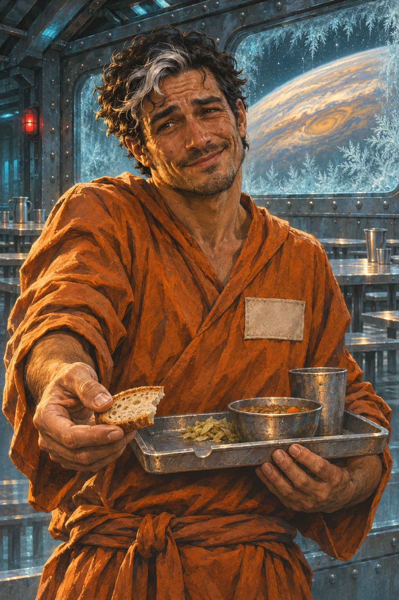
Серебряная прядь, лёгкая хромота, поднос с насечками и половина ломтя хлеба, которую он протягивает первой.
Посредник Длинного стола: обмен нарядами, вещами и прикрытием на перекличках.
Увидеть сестру на Кордее и не признаться себе, сколько чужого доверия уже заплатил за это обещание.
За обещанную встречу пересказывает коменданту фразы экипажа, сказанные при нём за столом. Не знает, что отчёт называет его источником и «переводит вместе с экипажем»: обещание пустое.
Не выдаёт того, чего не слышал; не лжёт в лицо, если спросить прямо про записку; не знает отчёта, пока ему не показали. Может отказаться помогать: прощение и раскаяние не обязательны.
Увидев свою строку в отчёте или записку о свидании, перестаёт доносить и может прочесть список блоку А. Если разоблачить его громко при всех, блок сторонится его, его переводят в блок А: прикрытия больше нет, но и цитат коменданта тоже.
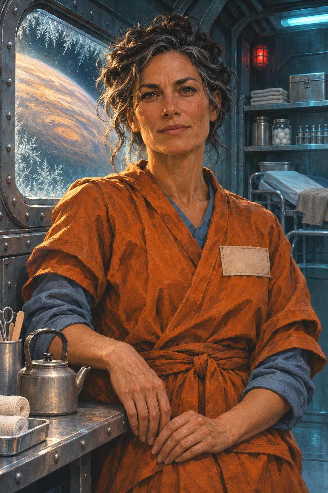
Синие рукава, короткие ногти и маленький чайник, который она выключает перед серьёзным разговором.
Врач станции; принимает заключённых и сотрудников в одной очереди.
Чтобы медицина не стала инструментом чужого плана.
Ей велели подписать проверку скафандров шлюза 3 на день 8 без проверки баллонов. Она отказалась и знает, что баллоны заряжены наполовину. Не знает, зачем это нужно коменданту.
Не даёт ложных диагнозов, не выдаёт пациента против его воли и спрашивает согласия прежде всего. Лечение — не плата за свидетельство.
Показывает неподписанную проверку скафандров, когда экипаж спрашивает о скафандрах или о дне 8.
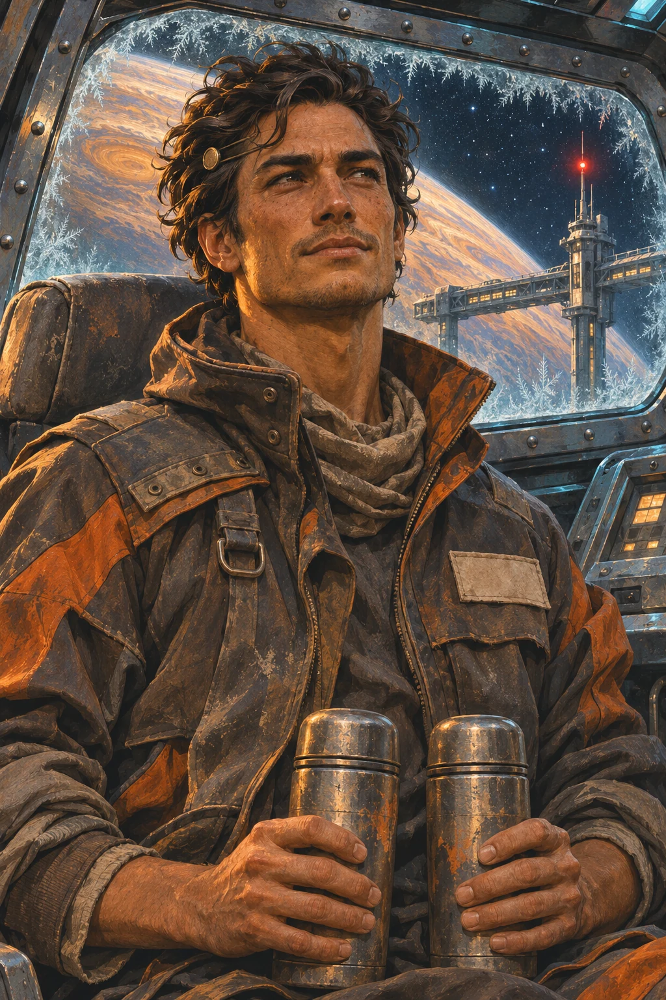
Потёртая куртка внешнего флота, круглая заколка и два одинаковых термоса.
Независимый пилот грузового шлюпа «Иней»; ждёт законный груз дня 8.
Помочь людям, которым верит, и самому решать, каким риском будет его рейс.
Паромом на Двадцатом командовал его бывший наставник: он знает историю «Стрижа» от спасённых и прилетел в том числе посмотреть на этот экипаж. Готов взять людей, если ему скажут правду о риске. Не всесильный спаситель: за пределами шлюпа и мачты помочь не может.
Не берёт заложников и не ждёт после сирены. Не знает расположения охраны, чужих приговоров и содержания улик.
Соглашается после честного разговора: сколько людей, когда, что за ними. Тогда даёт запасной баллон и стук.

Белая дорожная куртка, тяжёлая папка с бумажной печатью; сначала спрашивает, как человека записать.
Инспектор Службы надзора с ограниченным мандатом: проверка приговоров за неповиновение при спасении людей. Прибывает в день 3.
Решение, которое не исчезнет после её отлёта.
Её мандат не покрывает мятеж: если отчёт подписан, она бессильна. Подозревает, что перевод торопят, но доказательств нет. Опасается, что огласка навредит людям, не желающим раскрывать пережитое — это её личное опасение.
Не может остановить перевод и не командует охраной станции; конвою Службы переводов может прочесть мандат. Не требует исповедей, не подписывает неподтверждённое обвинение и не обещает свободу всем.
Прочтя отчёт, отказывается его подписывать и идёт на борт «Инея» как в «место, названное в документе».

Рыжие брови, спортивная повязка, роба с номером Т-20-00; на пустых упаковках рисует созвездия.
Заключённый, ведёт упражнения на Складном дворе; почему-то стоит в строю экипажа с номером нулевым.
Перестать быть «никем», чтобы история тридцати одного дошла до кого-то, и выбраться.
Бывший техник Двадцатого. Поставил пломбу по устному приказу коменданта при людях на пароме и через час сам вызвал «Стриж». Стыдится первого больше, чем гордится вторым. Не знает об отчёте. На третий день ему предложат подписать, что экипаж готовит захват шлюза 3; он не подпишет.
Не подписывает ложь и не идёт против экипажа; не ведёт людей к выходу, не объяснив последствий. Об отчёте и приказе Каи не знает, пока не услышит.
Рассказывает сам, если его не гонят; Мир узнаёт его голос по фразе из вызова.

Широкие ладони, выцветшая лента смены; смотрит на обшивку за стеклом чаще, чем на людей.
Рядовой охраны, несёт пост на Стеклянном обходе.
Дослужить без того, что он видел на Двадцатом.
Подписал рапорт об отказе ставить пломбу при людях. Не знает, что за это его поставили в шлюз 3 и что отчёт называет его погибшим.
Приказов не оспаривает вслух, пока не увидит бумагу со своим именем; не стреляет в тех, кого считает спасёнными. Не знает отчёта.
Прочтя свою строку, выбирает сам: открыть экипажу внутреннюю дверь шлюза 3 и не стрелять.

Коротко стриженная, считает шаги губами и ходит чуть быстрее напарника.
Рядовая охраны на Стеклянном обходе.
Перевестись на планету.
Подписала тот же рапорт, что Вельд. Знает, что баллоны скафандров шлюза 3 заряжены наполовину: видела шкалы при сдаче шкафчиков.
Не нарушает приказа без причины и не стреляет в упавшего. Не знает отчёта и его строк.
Прочтя свою строку, закрывает за экипажем внутреннюю дверь шлюза 3 и остаётся с этой стороны.
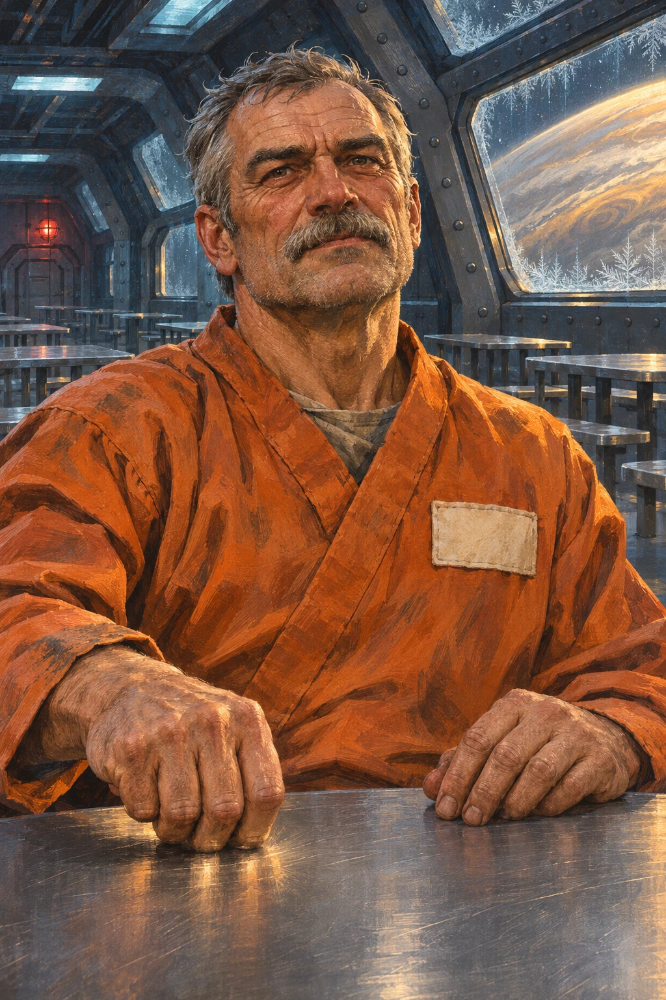
Седые усы, широкие мозолистые пальцы, номер А-114; постукивает костяшкой по столу, как по обшивке.
Заключённый блока А, старый механик, который ест за Длинным столом.
Чтобы его заявление о Двадцатом причале прочли.
Подал заявление инспектору о причале и не знает, что в отчёте уже значится погибшим.
Не идёт на обшивку без своего согласия и не участвует в драках. Об отчёте не знает.
Услышав свою строку, сам решает, идти ли со всеми; блок А поддерживает его решение.

Тёмные кудри под платком, номер А-117, быстрая улыбка.
Заключённая блока А, помогает на раздаче Длинного стола.
Вернуть себе имя вместо номера.
Подала второе заявление о Двадцатом. На пароме считала воздух: его оставалось на сутки.
Не идёт на обшивку без своего согласия и не провоцирует охрану. Об отчёте не знает.
Услышав список, решает за себя; если идёт, ведёт блок А за собой и сама просит скафандр.
Пересадочная тюрьма над облачной Кордеей: кольцо жилых блоков, прозрачные переходы на рядах заклёпок, обзорная галерея и причалы. За стеклом — тишина и вакуум, внутри время измеряют перекличками. На стене каждого блока висит сетка с вписанными часами.
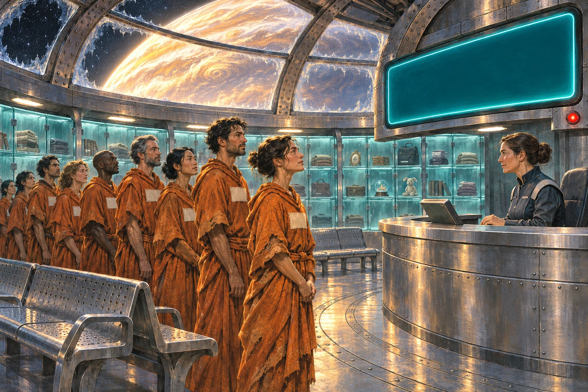
Круглая приёмная с ящиками личных вещей, скамьями и табло переводов. Пол размечен рядом заклёпок, вдоль которого ставят строй. За холодным стеклом медленно поворачивается Кордея. Здесь прибывшие впервые слышат номер на собственной робе. Кабинет коменданта выходит дверью в этот же зал.
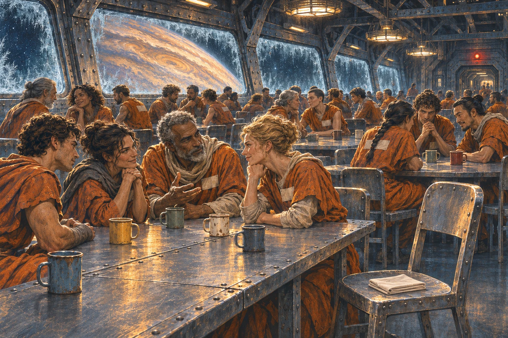
Общая столовая со сдвинутыми столами и металлическими подносами. Здесь проходит дневная перекличка: номер — и ложка вверх. Ломоть хлеба за этим столом может быть приглашением, обменом нарядами или обещанием прикрыть чужой номер.
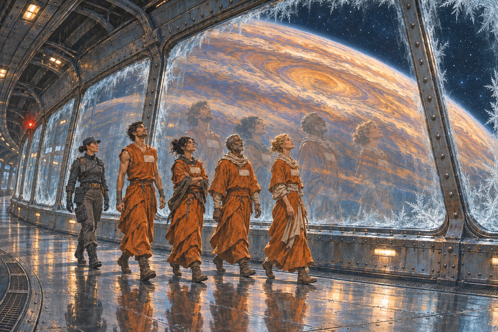
Широкая галерея вдоль обзорных окон. Три окна смотрят на внешнюю обшивку: ряды заклёпок, страховочные кольца через каждые три шага, мачта шлюпов, а в дальнем конце кольца — закрытый старый причал. Под стеклом холодно, на рамах выпадает иней. Окна снабжены узкими амбразурами для охраны.

Площадка разрешённых работ и упражнений с мягкими перегородками, низкими контейнерами и цветными полосами на полу. Модули переставляют ради занятий, не ради ремонта. Здесь разговаривают тише, чем в блоке, и громче, чем в лазарете.
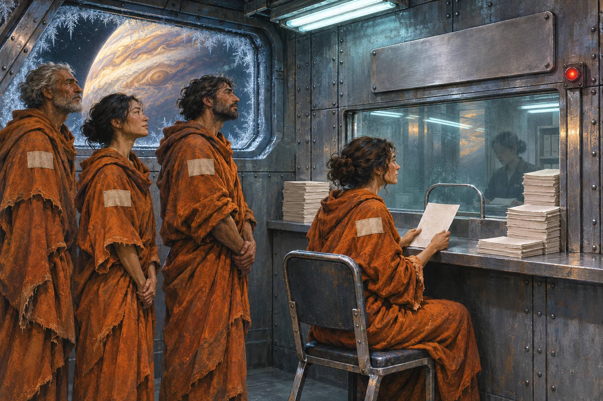
Зал с короткой очередью, креслом посетителя и архивными шкафами за решёткой. На стене стенд с объявлениями, над окном надпись: «Ответ передаётся лично». Пахнет бумагой и тёплым металлом печатей.

Небольшой медпункт с ширмами, синим ночным светом и чайником на подоконнике. Врач принимает и заключённых, и сотрудников в одной очереди и просит сначала спросить, согласен ли пациент говорить.
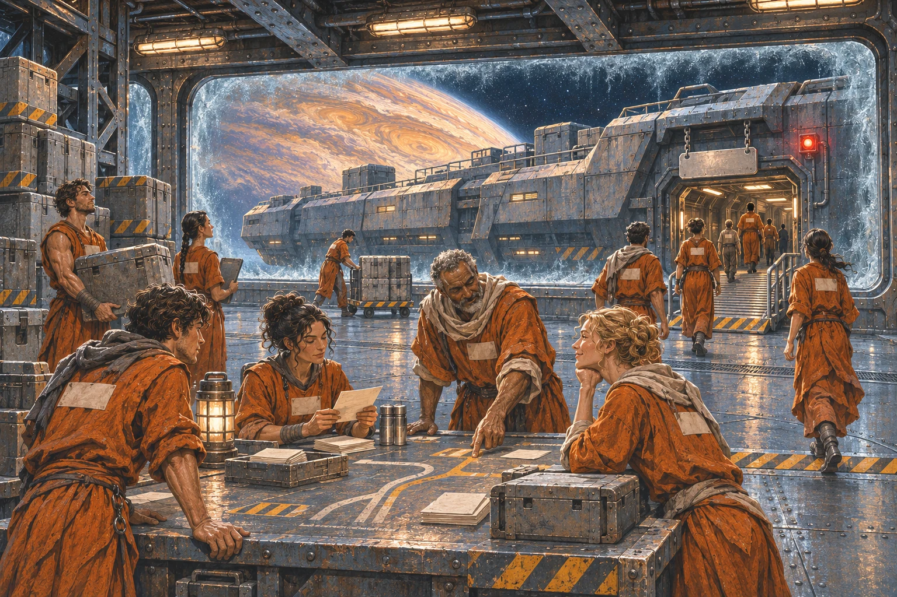
Крытая площадка между складом и шлюзом 3. Сменщики собираются у размеченного стола выдачи. За широким стеклом видна мачта шлюпов на внешней обшивке и небольшой грузовой шлюп «Иней»; у стола висит табличка рейса с двенадцатью кружками.

Пассажирский зал с обзорным экраном, рядами сидений и широкими дверями парома Службы переводов. Над проходом принято прощаться с планетой. Сюда в день 8 приходит перекличка перевода, и посадка идёт по номерам.

Коридор камер на рядах заклёпок: двери с номерами, ночники, сетка перекличек на стене у входа. Здесь живёт экипаж, здесь утром и вечером читают номера. Соседнее крыло — блок А. Западная дверь ведёт в коридор Тихого лазарета, восточные ворота — к Палубе грузовых смен.
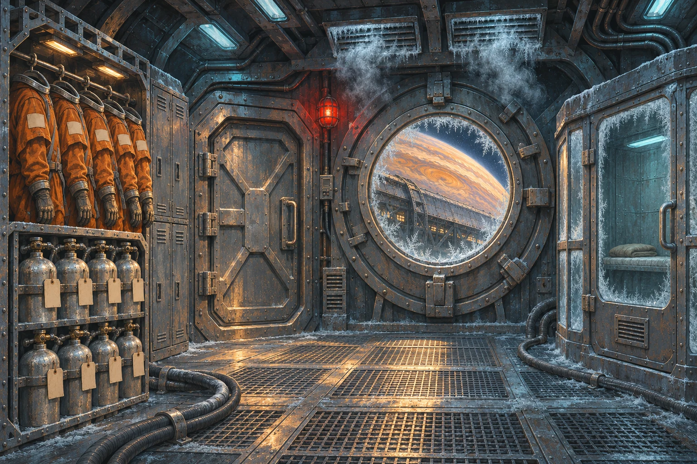
Камера между Прощальным причалом и Палубой грузовых смен: внутренняя дверь, стойки скафандров, шкафчики баллонов с бирками, изолятор в предшлюзе и внешний люк с круглым окошком. Через окошко видна обшивка. Пол в шланговых решётках, везде иней от вентиляции.

Снаружи: ряды заклёпок, страховочные кольца через каждые три шага, рёбра жёсткости, несколько сорванных листов. Сверху — три окна Стеклянного обхода, снизу — край кольца и облака Кордеи. В двенадцати шагах восточнее шлюза 3 стоит мачта шлюпов и грузовой шлюп «Иней». Тишина полная; слышно только своё дыхание в скафандре.

Старый пассажирский причал на дальней стороне кольца, закрытый и опечатанный. На внешнем кольце виден рваный край захвата и свежая пломба. Издалека, из окна Стеклянного обхода, он выглядит как пустая дверь, из которой что-то вынули. Внутри никто не бывает.

Потёртая записная книжка с загнутыми уголками. Вместо номеров на страницах нарисованы лица: тридцать одно, карандашом, у каждого пара штрихов вместо подписи. На одной из страниц пометка: «вызов, Двадцатый: здесь люди, давление падает». Книжка ещё пахнет буксирной кабиной.
Мир Авель держит её с вечера 1. По книжке он узнаёт Якова Стреля (А-114) и Розу Минт (А-117) за Длинным столом и голос Эша по фразе из вызова. Раз в сутки один из узнанных по просьбе экипажа берёт на себя одну палочку на дневной перекличке: ведущий снимает её до проявления. Книжка помогает пути В: по ней можно рассказать блоку А, кто есть кто. Главная цель встречи «Обыск в блоке Б»: под синей лентой её не забирают; если отобрали, Мир за ночь рисует десять лиц по памяти, а прикрытие узнанных недоступно. Отданная на борт «Инея», книжка уходит со станции.
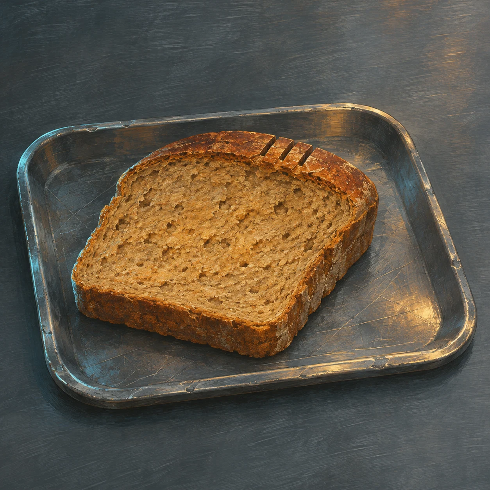
Чёрствый ломоть хлеба, слегка обломанный по краю. На корке три аккуратные насечки, сделанные ножом. Ломоть пахнет кухней Длинного стола и греется в кармане быстрее, чем остывает.
Появляется, только если кто-то договорился с Сором; ломоть у того, кто договаривался (на кухне — по умолчанию у Агаты, если она за столом; в данных записан Мир). Показать ломоть Сору — и он раз в сутки прикрывает чужой номер на перекличке или берёт на себя одну палочку до проявления. Пока Сор носит коменданту услышанное, цена прикрытия — одна фраза дня, которую комендант зачитает утром. Когда Сор перестал доносить, цены нет; если его разоблачили громко, ломоть бесполезен.

Стеклянный стержень длиной в ладонь в оправе с тремя кольцами. Он тёплый на ощупь, в глубине стекла при движении дрожит слабое сияние. Илай носит его под воротником, рядом с рисунками звёзд.
Фокус волшебника-проекциониста, у Илая с вечера 1. Нужен, чтобы на строке 5 (вечер 7) вывести на стекло обхода одну строку отчёта. В финале — бонусным действием, эффект по карте финала. Если Илай сломал строку 5, проектор «находят» и изымают; если исполнил — перо изымают после, если Илай заранее не передал его соседу (сказать вслух до сцены; безопаснее — под синюю ленту). Без пера Илай выводит свет обычным заклинанием, но финального эффекта нет.
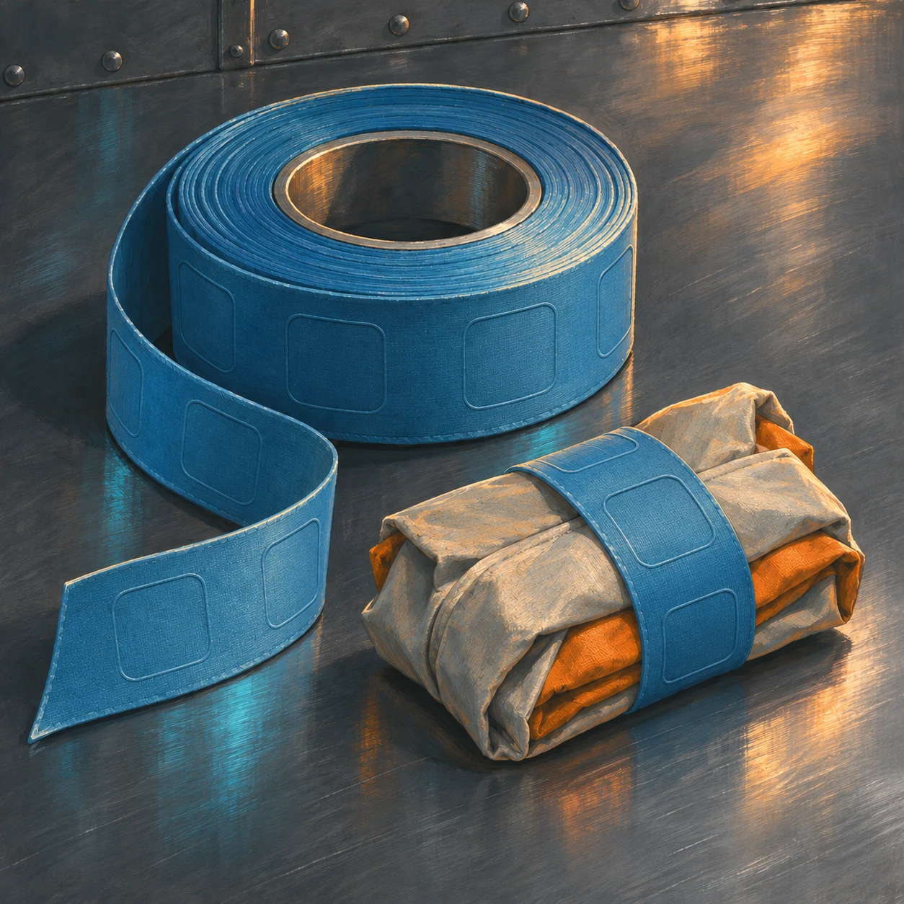
Моток узких синих лент с чёрным оттиском «Медицинское. Не вскрывать без врача». На катушке остаётся запас длиной в две-три обмотки. Лента шуршит, как бумага, и липнет к пальцам.
Появляется в вечере 2, если Хана взяла Нару санитаркой. Один свёрток или предмет под пломбой охрана не забирает при обыске (отметки 5–6, строка 6 отчёта, встреча «Обыск в блоке Б»). Нара переносит пломбу на другой предмет раз в сутки; предмет в этот момент не может быть в руках охранника. Под пломбу идут книжка лиц, световое перо или копия отчёта. Пломба не защищает от прямого приказа коменданта и не помогает против конвоя Службы переводов, если тот уже держит предмет в руках.

Четыре листа дешёвой серой бумаги, исписанные ровным почерком архивистки, без штампа и без подписей. Края подогнуты, с одной стороны отчётливо видна складка, по которой лист носили в кармане. Листы скреплены канцелярской скрепкой.
Появляется в вечере 4, если Адель отдала копию (иначе утром дня 5). Её можно показать, прочесть вслух или отдать: так отчёт попадает к тем, кого касается (пути Б, В, Г). Путь Б забирает копию. Вторую копию Адель делает за окно, раз в сутки. При обыске копия забирается первой, если не под синей лентой; задержанный держатель (Севра на строке 3, цель «Строки первой») теряет её так же. Без копии строку читают по памяти Мир или Илай; поверить без листа труднее, и ведущий решает это голосом NPC, не броском.
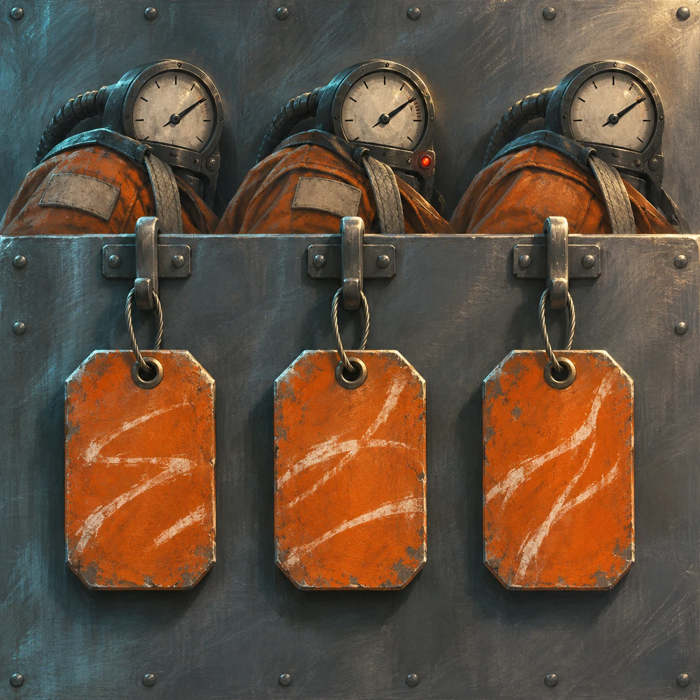
Не вещь, а переписанные мелом бирки на шкафчиках шлюза 3: на каждой стоит метка, какие скафандры снаряжены полностью. Мел лёг неровно, но Бор помнит, где какая метка, и показывает её товарищам одним кивком. Шкалы на плечах скафандров показывают полный круг.
Появляется, только если баллоны добыли: осмотр скафандров Ханой (дело в окне), законный груз Арона, который принимает Бор, встреча «Шкафчики шлюза 3» боем или мирно (вечер 6) или ночь Эша в шлюзе после строки 6 (вечер 7). Держит Бор: он помнит бирки. В финале — строка «Воздух» карты финала. Спутники в старых скафандрах этих баллонов не получают. Если баллонов нет, ведущий говорит это вслух до раунда 1.
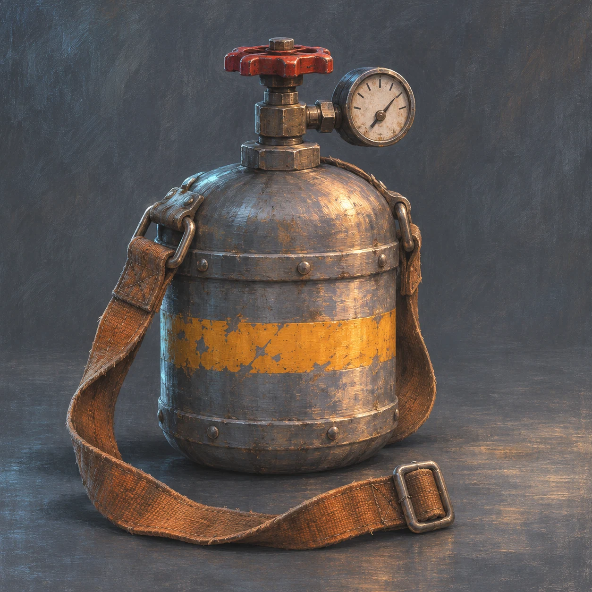
Короткий серый баллон с жёлтой полосой вокруг горловины и ремнём через плечо. Из груза «Инея». На боку выбит ряд цифр и две вмятины от перевозок.
Появляется, только если Арону честно сказали, сколько будет людей, когда и что за ними (вечер 3 или 6); держит Бор. Один баллон, одному человеку, меняется до выхода, в шлюзе; сколько он даёт — строка «Воздух» карты финала. Если честного разговора не было или Арону солгали, баллона нет.

Ряд точек и тире, выведенный шариковой ручкой на внутренней стороне рукава робы. Чернила чуть растеклись по ткани. Если не знать, что это, получится рисунок из бусин.
Появляется, когда с Ароном договорились о стуке (вечер 6, на палубе; по умолчанию у Бора — у того, кто договаривался). Если договора нет, Арон сам показывает стук в сцене 1 вечера 8, и при переносе тоже, — но только тем, кто ему не лгал. Стучать в люк может любой герой, код знать не обязательно: со стуком «Инея» люк открывается быстрее, незнакомый стук Арон сначала проверяет по каналу — сколько это стоит раундов, сказано во встрече «Обшивка» (цель, «Люк»). При пути Б стук не нужен.

Служебная карточка из плотного картона в серой окантовке, с колонкой постов по часам и столбцом фамилий. В верхнем углу дата вручения «день 3» и штамп смены. Угол надорван, будто карточку держали слишком крепко.
Появляется с вечера 6: Кая отдаёт карточку тому, кто честно ответил ей о Двадцатом и спросил о дне 8, или тому, кто показал ей строку 7 (путь Г); в данных — у Илая. Иначе посты называют Вельд и Лоус вслух, а карточка остаётся у Каи. В финале — строка «Окна» карты финала. Карточка — улика: показать её инспектору или рядовым значит предъявить расстановку. При обыске забирается наравне с копией отчёта.


Условия: Каждый герой, вышедший на обшивку, оказался на борту «Инея» в момент отхода (по сирене или раньше, если на обшивке не осталось никого, кого можно довести). Герой отсутствующего игрока на обшивку не выходит и не считается.
Захваты мачты остаются позади, станция уменьшается в иллюминаторе, вся в огнях окон. Кто ещё на борту — Эш, Яков и Роза, инспектор — тот на борту; кого не довели, того видно в люке шлюза 3. Динамик оживает голосом коменданта: «„Иней“, вернитесь к мачте. Так записано». Арон смотрит на вас и не берётся за микрофон. Вызов повторяется. Шлюп не отвечает.
Цена: Вы беглецы, а не оправданные. Если инспектора нет на борту, отчёт остаётся на станции без её подписи, и комендант ищет другую; захват Двадцатого по-прежнему вырвали вы, и это придётся объяснять.
Условия: Хотя бы один герой на борту «Инея» и хотя бы один — нет: остался на обшивке, в шлюзе или сорван со страховки.
«Иней» уходит с теми, кто внутри. Тех, кто остался, конвой заводит в шлюз 3 живыми, и строка 8 о погибших не исполняется. Если инспектор на борту, она увозит отчёт и знает, что оставшиеся — живые свидетели; если нет — их переводят раздельно, как написано. Из шлюза оставшиеся слышат по каналу обшивки, как станция вызывает «Иней». Шлюп не отвечает.
Цена: Экипаж разделён ровно там, где хотел его разделить комендант; у тех, кто улетел, есть имена тех, кто остался, и обещание, которое придётся исполнить.
Условия: Ни одного героя на борту «Инея» в момент отхода.
Арон отходит по сирене — один или с теми спутниками, кого успели завести в люк. Экипаж в шлюзе 3, скафандры дышат, конвой снимает карабины. Строки о погибших не исполнились, но перевод раздельный, как написано. По каналу обшивки станция вызывает «Иней» снова и снова. Шлюп не отвечает.
Цена: Плен и разлука. Единственное, что вышло со станции, — то, что успели отдать на борт: отчёт, если он у инспектора, и записная книжка лиц, если её передали.
Авторская подготовка и техническая проверка не заменяют живую игру. Длительность, сложность и эмоциональное восприятие пока не проверены группой. Иллюстрации (46) созданы генерацией изображений OpenAI в одном стиле; тактические схемы построены из данных встреч. Полный каталог содержит материалы ведущего — публиковать его целиком для игроков нельзя.